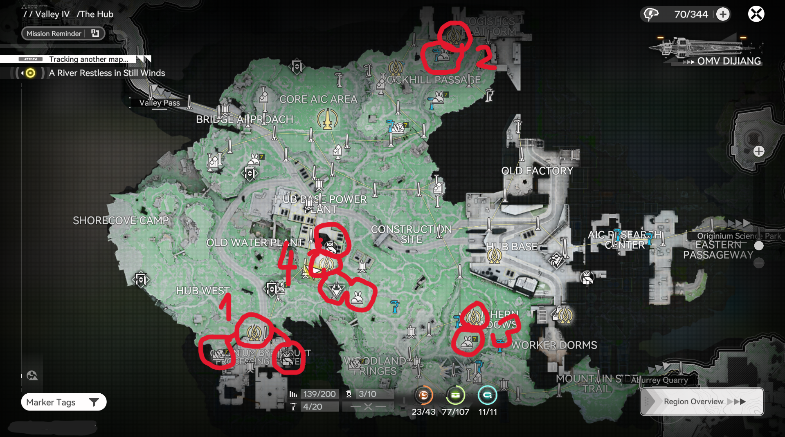

1-4
THE HUB (VALLEY IV) – Red path loop
1. Teleport to Originium Byproduct Processing Plant → gather Kalkonyx (rare mineral) right nearby + optional Aerospace Materials from Recycling Station.
2. Teleport to Logistics Platform → quickly pick Kalkodendra flower.
3. Teleport to Southern Meadows → grab Kalkodendra flower as well.
4. Teleport to Old Water Plant area → optional Aerospace Materials from Recycling Station → walk down to fight the anomaly for Perfect Essence → finish with another rare Pink Bolete fungi spot.
